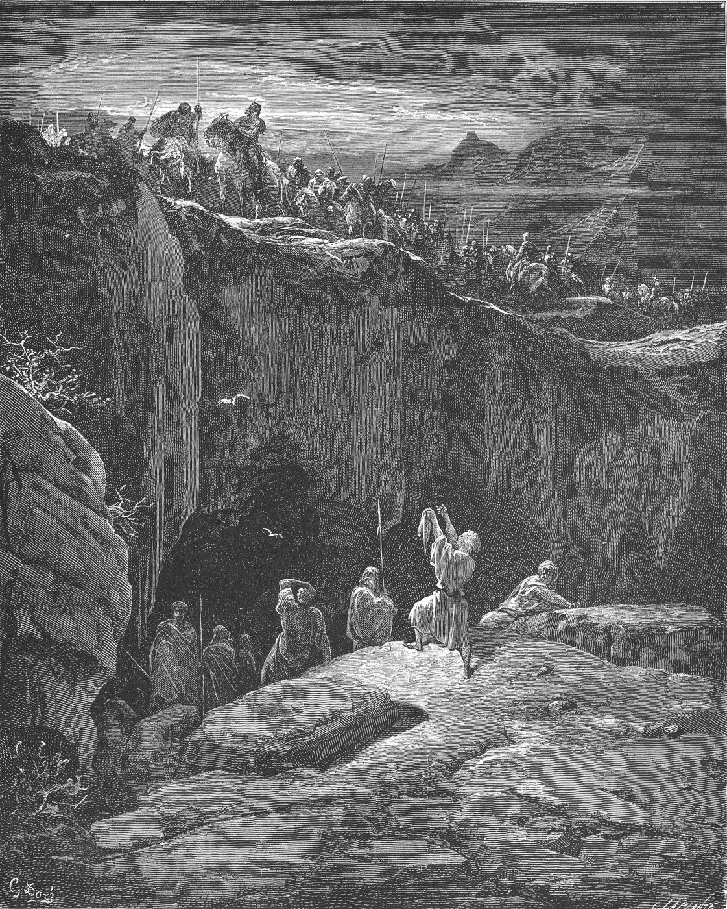

Psalm 18 — The Mister Translation

Psalm 18:1. The heading says David sang this song ‘in the day Jehovah delivered him from the palm of all his enemies and from the hand of Saul’, and does not say which day. Doré draws the cave of 1 Samuel 24, where David, hidden below the cliff on which Saul’s men march, held up the cut corner of Saul’s robe, the episode of David sparing Saul; the psalm tells none of this, and the cave, the host on the ridge and the cloth are the engraver’s.

Translator's Notes — verse by verse
⭐ This is also 2 Samuel 22. The song is in the book of Samuel too (2 Samuel 22, now on these pages), with small differences, and these notes mark where the two differ. The heading says the song was spoken “in the day Jehovah delivered him from the palm of all his enemies and from the hand of Saul”, the same sentence as 2 Samuel 22:1, and adds “for the leader” and “servant of Jehovah”. The heading is part of verse 1 and is not numbered apart.
⭐ I love you. The first line is the psalm’s alone: “I love you”, erchamkha, stands in this one verse, and it is not in 2 Samuel 22. The KJV has “I will love thee, O Lord, my strength”, the ASV “I love thee, O Jehovah, my strength”, the NIV “I love you, Lord, my strength”, the NWT 1984 “I shall have affection for you, O Jehovah my strength”, the Douay “I will love thee, O Lord, my strength” and the TLB “Lord, how I love you!”.
⭐ Seven names of safety. Verse 2 piles them up: sal’i, my crag; metsudati, my stronghold; mefalti, my deliverer; tsuri, my rock; maginni, my shield; qeren yish’i, the horn of my salvation; misgavi, my high tower (misgav). The KJV has “The Lord is my rock, and my fortress, and my deliverer”, the ASV “Jehovah is my rock, and my fortress, and my deliverer”, the NIV “The Lord is my rock, my fortress and my deliverer”, the NWT 1984 “Jehovah is my crag and my stronghold and the Provider of escape for me”, the Douay “The Lord is my firmament, my refuge, and my deliverer” and the TLB “The Lord is my fort where I can enter and be safe”. ⚠ Two words for rock are in the verse, sela and tsur; the KJV prints the second the second time as “my God, my strength”, so it makes one of them disappear. “my high tower” stands in seven verses of the Hebrew Bible (2 Samuel 22:3, Psalm 18:2, 59:9, 59:17, 62:2, 62:6 and 144:2).
⭐ Cords, not breakers. Verse 4 is “the cords of death surrounded me”, which stands in two verses, here and Psalm 116:3; 2 Samuel 22:5 has mishberei mavet, “the breakers of death”, in its place. Chevel is a cord or a pang, and the shelf prints it three ways: the KJV has “The sorrows of death compassed me”, the ASV “The cords of death compassed me”, the NIV “The cords of death entangled me”, the NWT 1984 “The ropes of death encircled me”, the Douay “The sorrows of death surrounded me” and the TLB “Death bound me with chains”. “the torrents of worthlessness terrified me” stands in this one verse: the KJV has “the floods of ungodly men made me afraid”, the ASV “the floods of ungodliness made me afraid”, the NIV “the torrents of destruction overwhelmed me” and the Douay “the torrents of iniquity troubled me”.
⭐ Sheol, and the verb that comes back. “the cords of Sheol went around me” stands in this one verse: the KJV has “The sorrows of hell compassed me about”, the ASV “The cords of Sheol were round about me” and the NIV “The cords of the grave coiled around me”. The second half is “the snares of death confronted me”, with the verb qiddemuni, and the same verb returns at verse 18 (“They confronted me in the day of my calamity”); the KJV prints “prevented me” both times, in the old sense of came before me, and the NIV “The snares of death confronted me” and “They confronted me”.
⭐ He heard. “In my distress I called on Jehovah” stands in two verses, here and 2 Samuel 22:7, and so does “he heard my voice from his temple”. The psalm has two verbs for the call (eqra, ashavve’a) where 2 Samuel 22 has eqra twice, and it adds “before him”: the KJV has “he heard my voice out of his temple, and my cry came before him, even into his ears”, the NIV “From his temple he heard my voice; my cry came before him, into his ears” and the TLB “my cry reached his ears”. The word for distress is tsar, narrow, and its opposite is merchav, broad, at verse 19.
⭐ Mountains, not heavens. The shaking of the earth has the foundations of the mountains where 2 Samuel 22:8 has “the foundations of the heavens”: the KJV has “the foundations also of the hills moved and were shaken, because he was wroth”, the ASV “The foundations also of the mountains quaked And were shaken, because he was wroth”, the NIV “the foundations of the mountains shook; they trembled because he was angry” and the NWT 1984 “the foundations of the mountains themselves became agitated”. It is the earth at Sinai (Exodus 19:18, now on these pages), with smoke and fire.
⭐ Smoke, fire, coals. The anger of verse 7 is in the body of God: the KJV has “There went up a smoke out of his nostrils, and fire out of his mouth devoured: coals were kindled by it” and the NIV “Smoke rose from his nostrils; consuming fire came from his mouth, burning coals blazed out of it”. “Smoke went up from his nostrils” stands in two verses, here and 2 Samuel 22:9.
⭐ He bent the heavens. The verb of verse 9 is vayyet, he bent or spread out, and the shelf prints it two ways: the KJV has “He bowed the heavens also, and came down: and darkness was under his feet”, the NWT 1984 “And he proceeded to bend the heavens down and descend” and the Douay “He bowed the heavens, and came down”; the NIV has “He parted the heavens and came down; dark clouds were under his feet”.
⭐ On a cherub. “he rode on a cherub, and flew” stands in two verses, here and 2 Samuel 22:11. The KJV has “And he rode upon a cherub, and did fly: yea, he did fly upon the wings of the wind”, the ASV “yea, he soared upon the wings of the wind”, the NIV “He mounted the cherubim and flew; he soared on the wings of the wind” (the Hebrew has one cherub), the NWT 1984 “And he came riding upon a cherub and came flying”, the Douay “And he ascended upon the cherubim” and the TLB “Mounted on a mighty angel”. ⚠ The last verb differs by one letter: the psalm has vayyede, “he soared”, with a dalet; 2 Samuel 22:11 has vayyera, “he was seen”, with a resh; “he soared on the wings of the wind” stands in this one verse.
⭐ Darkness, and hail. “He made darkness his hiding place” stands in this one verse: the KJV has “He made darkness his secret place; his pavilion round about him were dark waters and thick clouds of the skies”, the NIV “He made darkness his covering, his canopy around him—the dark rain clouds of the sky”, the NWT 1984 “He then made darkness his concealment place” and the TLB “He enshrouded himself with darkness”. And “hail and coals of fire” stands in two verses, 12 and 13, both of them here: the KJV has “hail stones and coals of fire” in each, the NIV “with hailstones and bolts of lightning” in verse 12 and nothing in verse 13, and 2 Samuel 22 has the line neither time. The hail and fire of the plague are in Exodus 9:24 (now on these pages).
⭐ He thundered. “Jehovah thundered in the heavens” stands in this one verse, where 2 Samuel 22:14 has “from the heavens”: the KJV has “The Lord also thundered in the heavens, and the Highest gave his voice”, the ASV “Jehovah also thundered in the heavens, And the Most High uttered his voice”, the NWT 1984 “And in the heavens Jehovah began to thunder, And the Most High himself began to give his voice” and the Douay “And the Lord thundered from heaven, and the highest gave his voice”. Hannah’s song has the thunder too (1 Samuel 2:10, now on these pages). “The Most High gave his voice”, ve’elyon yiten qolo, is in both texts, the psalm spelling the last word without the vav.
⭐ Arrows, and the sea laid bare. The KJV has “Yea, he sent out his arrows, and scattered them; and he shot out lightnings, and discomfited them”, the ASV “Yea, lightnings manifold, and discomfited them”, the NIV “He shot his arrows and scattered the enemy, with great bolts of lightning he routed them” and the NWT 1984 “And he kept sending out his arrows, that he might scatter them”; the psalm has the lightnings rav, “many”. At verse 15 the sea floor shows: the KJV has “Then the channels of waters were seen, and the foundations of the world were discovered at thy rebuke, O Lord, at the blast of the breath of thy nostrils”, the NIV “The valleys of the sea were exposed and the foundations of the earth laid bare at your rebuke, Lord” (which follows 2 Samuel’s “sea”) and the NWT 1984 “And the streambeds of waters became visible”. The psalm says your rebuke and your nostrils where 2 Samuel 22 says his, and “the blast of… your nostrils” is the wind of the Exodus sea (Exodus 15:8, now on these pages).
⭐ Drawn out. “He sent from on high, he took me; he drew me out of many waters” stands in two verses, here and 2 Samuel 22:17. The verb is yamsheni, from mashah, to draw out, the verb Pharaoh’s daughter uses for the name of Moses: “I drew him out”, meshitihu, stands in this one verse, Exodus 2:10 (now on these pages), where she names him Moshe “because I drew him out of the water”. The KJV has “He sent from above, he took me, he drew me out of many waters”, the NIV “He reached down from on high and took hold of me; he drew me out of deep waters”, the NWT 1984 “He was drawing me out of great waters”, the Douay “and took me: and received me out of many waters” and the TLB “He reached down from heaven and took me and drew me out of my great trials”.
⭐ Too strong for me. The KJV has “He delivered me from my strong enemy, and from them which hated me: for they were too strong for me” and the NIV “He rescued me from my powerful enemy, from my foes, who were too strong for me”. And verse 18: the KJV has “They prevented me in the day of my calamity: but the Lord was my stay”, the NIV “They confronted me in the day of my disaster, but the Lord was my support” and the NWT 1984 “But Jehovah came to be as a support for me”. The word for support is mish’an, a staff to lean on.
⭐ A broad place. “he brought me out to a broad place” stands in this one verse, and 2 Samuel 22:20 has vayetse, “he went out”; merchav answers the tsar of verse 6. The KJV has “He brought me forth also into a large place; he delivered me, because he delighted in me”, the NIV “He brought me out into a spacious place; he rescued me because he delighted in me”, the NWT 1984 “into a roomy place”, the TLB “He led me to a place of safety, for he delights in me”, the Geneva “he delivered me because he favored me” and the Douay “because he was well pleased with me”.
⭐ My righteousness, my clean hands. Verses 20 and 24 frame the claim with the same words: “the cleanness of my hands” stands in three verses, here, verse 24 and 2 Samuel 22:21. The KJV has “The Lord rewarded me according to my righteousness; according to the cleanness of my hands hath he recompensed me”, the NIV “The Lord has dealt with me according to my righteousness”, the NWT 1984 “Jehovah rewards me according to my righteousness; According to the cleanness of my hands he repays me”, the Douay “And the Lord will reward me according to my justice” and the TLB “The Lord rewarded me for doing right and being pure”. It is a claim about this deliverance, in a psalm whose heading says what he was delivered from.
⭐ The ways. The KJV has “For I have kept the ways of the Lord, and have not wickedly departed from my God”, the NIV “For I have kept the ways of the Lord; I am not guilty of turning from my God”; and at verse 22 the KJV has “For all his judgments were before me, and I did not put away his statutes from me”, the ASV “For all his ordinances were before me”, the NIV “All his laws are before me; I have not turned away from his decrees” and the NWT 1984 “For all his judicial decisions are in front of me”. “I have kept the ways of Jehovah” stands in two verses, here and 2 Samuel 22:22.
⭐ Blameless. Tamim is the word of verse 23: the KJV has “I was also upright before him, and I kept myself from mine iniquity”, the ASV “I was also perfect with him”, the NIV “I have been blameless before him” and the NWT 1984 “And I will prove myself faultless with him”. It is the first of four: he is tamim (23), God shows himself tamim to the tamim man (26), God’s way is tamim (31), and God makes his way tamim (33). “Before him” is immo, “with him”, where 2 Samuel 22:24 has lo, “to him”.
⭐ You show yourself as they are. “with the loyal you show yourself loyal” stands in two verses, here and 2 Samuel 22:26, and “with the blameless man you show yourself blameless” stands in this one verse (2 Samuel 22:26 has gibbor, “hero”, where the psalm has gever, “man”). The KJV has “With the merciful thou wilt shew thyself merciful; with an upright man thou wilt shew thyself upright”, the ASV “With the perfect man thou wilt show thyself perfect”, the NIV “To the faithful you show yourself faithful, to the blameless you show yourself blameless”, the NWT 1984 “With someone loyal you will act in loyalty; With the faultless, able-bodied man you will deal faultlessly”, the Geneva “With the godly thou wilt show thyself godly” and the Douay “With the holy, thou wilt be holy; and with the innocent man thou wilt be innocent”. The verb is the reflexive of the same root as the person: titchassad, “you show yourself loyal”.
⚠ The twisted. “with the pure you show yourself pure; and with the crooked you show yourself twisted” stands in this one verse: the KJV has “With the pure thou wilt shew thyself pure; and with the froward thou wilt shew thyself froward”, the ASV “with the perverse thou wilt show thyself froward”, the NIV “but to the devious you show yourself shrewd”, the NWT 1984 “with the crooked one you will show yourself tortuous”, the Douay “with the perverse thou wilt be perverted” and the TLB “You give blessings to the pure but pain to those who leave your paths”. The last verb, titpattal, is of twisting, wrestling, and the shelf cannot decide whether God turns twisted or turns shrewd; this translation prints “twisted” and marks the choice.
⭐ Brought low. “For you save an afflicted people” stands in this one verse, and “haughty eyes you bring low” stands in this one verse. The verb of bringing low, tashpil, is the root of Daniel 5:22 (Belshazzar “have not brought your heart low”) and of Daniel 7:24 (now on these pages). The KJV has “For thou wilt save the afflicted people; but wilt bring down high looks”, the ASV “But the haughty eyes thou wilt bring down”, the NIV “You save the humble but bring low those whose eyes are haughty”, the Geneva “wilt cast down to proud looks” and the Douay “but wilt bring down the eyes of the proud”.
⭐ A lamp. “For you light my lamp” stands in this one verse, and 2 Samuel 22:29 has “you are my lamp”: the KJV has “For thou wilt light my candle: the Lord my God will enlighten my darkness”, the NIV “You, Lord, keep my lamp burning; my God turns my darkness into light”, the NWT 1984 “For you yourself will light my lamp, O Jehovah”, the Douay “For thou lightest my lamp, O Lord” and the TLB “You have turned on my light!”. The men of David had once said he must not go out to battle again, “lest you quench the lamp of Israel” (2 Samuel 21:17, now on these pages).
⭐ A troop, a wall. The KJV has “For by thee I have run through a troop; and by my God have I leaped over a wall”, the ASV “For by thee I run upon a troop; And by my God do I leap over a wall”, the NIV “With your help I can advance against a troop; with my God I can scale a wall”, the NWT 1984 “For by you I can run against a marauder band”, the Geneva “For by thee I have broken through an host” and the Douay “For by thee I shall be delivered from temptation”, which is the Latin’s own reading of gedud.
⭐ His way; his word. “the word of Jehovah is refined” stands in two verses, here and 2 Samuel 22:31. The KJV has “As for God, his way is perfect: the word of the Lord is tried: he is a buckler to all those that trust in him”, the ASV “The word of Jehovah is tried; He is a shield unto all them that take refuge in him”, the NIV “The Lord’s word is flawless; he shields all who take refuge in him”, the NWT 1984 “The saying of Jehovah is a refined one” and the Douay “the words of the Lord are fire tried”. A near copy is in Proverbs 30:5, “Every word of God is refined; he is a shield”.
⭐ Who is Eloah? “besides our God”, zulati Eloheinu, stands in this one verse; the psalm has Eloah, the longer word for God, where 2 Samuel 22:32 has El. The KJV has “For who is God save the Lord? or who is a rock save our God?”, the NIV “For who is God besides the Lord? And who is the Rock except our God?”, the NWT 1984 “For who is a God besides Jehovah? And who is a rock except our God?”, the TLB “For who is God except our Lord? Who but he is as a rock?”, the Geneva “and who is mighty save our God?” and the Douay “For who is God but the Lord? or who is God but our God?”, with “God” for the rock. It is Hannah’s line: “there is no rock like our God” (1 Samuel 2:2, now on these pages).
⭐ Strength for the feet. The KJV has “It is God that girdeth me with strength, and maketh my way perfect”, the NIV “It is God who arms me with strength and keeps my way secure” and the NWT 1984 “girding me closely with vital energy”; the girding is picked up again at verse 39. “my feet like hinds’ feet” stands in three verses: here, 2 Samuel 22:34 and Habakkuk 3:19 (now on these pages). The KJV has “He maketh my feet like hinds’ feet, and setteth me upon my high places”, the NIV “He makes my feet like the feet of a deer; he causes me to stand on the heights” and the TLB “He gives me the surefootedness of a mountain goat upon the crags”.
⚠ A bow of bronze. “a bow of bronze” stands in three verses, here, 2 Samuel 22:35 and Job 20:24, and it is read two ways. The KJV has “so that a bow of steel is broken by mine arms”, which makes the arms break the bow; the ASV has “So that mine arms do bend a bow of brass”, the NIV “my arms can bend a bow of bronze” and the NWT 1984 “my arms have pressed down a bow of copper”, which make them bend it. “who teaches my hands for war” stands in two verses, here and 2 Samuel 22:35.
⭐ Your right hand; your gentleness. Verse 35 says to God what verses 32–34 said of him: the KJV has “Thou hast also given me the shield of thy salvation: and thy right hand hath holden me up, and thy gentleness hath made me great”, the NIV “You make your saving help my shield, and your right hand sustains me; your help has made me great”, the NWT 1984 “And your own humility will make me great”, the Geneva “thy lovingkindness hath caused me to increase” and the Douay “And thy discipline hath corrected me unto the end”. ⚠ The right hand that supports is in the psalm and not in 2 Samuel 22:36; the word anvatkha is God’s gentleness or humility, and that God is gentle is the surprise of the line. At verse 36, tarchiv is merchav again: the KJV has “Thou hast enlarged my steps under me, that my feet did not slip” and the NWT 1984 “You will make room large enough for my steps under me”.
⚠ Past or future? The verbs of verses 37–48 are the Hebrew imperfect, which can be a habit, a present or a future, and the shelf is split across the whole stretch: the KJV has “I have pursued mine enemies, and overtaken them: neither did I turn again till they were consumed”, the NIV “I pursued my enemies and overtook them; I did not turn back till they were destroyed”, the ASV “I will pursue mine enemies, and overtake them; Neither will I turn again till they are consumed” and the NWT 1984 “I shall pursue my enemies and overtake them; And I shall not return until they are exterminated”. This translation prints the present, as the Hebrew has it, and says that the song can be read as a past, a habit or a hope. “I pursue my enemies and overtake them” stands in this one verse; 2 Samuel 22:38 has va’ashmidem, “and I destroyed them”, for va’ashigem, “and I overtook them”.
⭐ Struck through; girded. The KJV has “I have wounded them that they were not able to rise: they are fallen under my feet”, the ASV “I will smite them through, so that they shall not be able to rise”, the NIV “I crushed them so that they could not rise; they fell beneath my feet” and the NWT 1984 “I shall break them in pieces so that they will not be able to rise up”. Verse 39 repeats the girding of verse 32: “strength for war” stands in three verses, here, 2 Samuel 22:40 and Jeremiah 48:14. The KJV has “For thou hast girded me with strength unto the battle: thou hast subdued under me those that rose up against me”, the NIV “You armed me with strength for battle; you humbled my adversaries before me” and the NWT 1984 “And you will gird me with vital energy for warfare”.
⭐ The back of the neck. “my enemies—you give me the back of their necks” stands in this one verse: the KJV has “Thou hast also given me the necks of mine enemies; that I might destroy them that hate me”, the ASV “Thou hast also made mine enemies turn their backs unto me, That I might cut off them that hate me” and the NWT 1984 “you will certainly give me the back of” their necks, the neck of a man in flight.
⭐ No savior. “they cry for help, but there is no savior” stands in this one verse; 2 Samuel 22:42 has yish’u, “they looked”, where the psalm has yeshavve’u, “they cry for help”. The NWT 1984 has “They cry for help, but there is no savior, To Jehovah, but he actually does not answer them” and the KJV “but he answered them not”. Then the dust: “as dust before the wind” stands in this one verse; the KJV has “Then did I beat them small as the dust before the wind: I did cast them out as the dirt in the streets”, the NIV “I beat them as fine as windblown dust; I trampled them like mud in the streets” and the NWT 1984 “Like the mire of the streets I shall pour them out”.
⭐ Head of nations. “you set me as head of nations” stands in this one verse; 2 Samuel 22:44 has tishmereni, “you keep me”, for tesimeni, “you set me”, and “my people” for “the people”. “a people I have not known serve me” stands in this one verse. The KJV has “Thou hast delivered me from the strivings of the people; and thou hast made me the head of the heathen: a people whom I have not known shall serve me”, the NIV “You have delivered me from the attacks of the people; you have made me the head of nations”, the NWT 1984 “You will provide me escape from the faultfinding of the people” and the Douay “Thou wilt deliver me from the contradictions of the people: thou wilt make me head of the Gentiles”.
⭐ The sons of the stranger. The KJV has “As soon as they hear of me, they shall obey me: the strangers shall submit themselves unto me”, the NIV “foreigners cower before me; as soon as they hear of me, they obey me” and the NWT 1984 “At mere hearsay they will be obedient to me; Foreigners themselves will come cringing to me”; the verb yekhachashu is to lie, to feign, so their obedience is a pretense. Verse 45: the KJV has “The strangers shall fade away, and be afraid out of their close places”, the NIV “They all lose heart; they come trembling from their strongholds” and the NWT 1984 “And they will come quaking out from their bulwarks”. The last verb differs from 2 Samuel 22:46 by a swap of two letters: the psalm has vayacharegu, “they tremble”, and Samuel vayachgeru.
⭐ Jehovah lives. “Jehovah lives, and blessed be my rock” stands in two verses, here and 2 Samuel 22:47. The KJV has “The Lord liveth; and blessed be my rock; and let the God of my salvation be exalted”, the NIV “The Lord lives! Praise be to my Rock! Exalted be God my Savior!”, the NWT 1984 “Jehovah is living, and blessed be my Rock”, the TLB “God is alive! Praise him who is the great rock of protection”, the Geneva “Let the Lord live, and blessed be my strength” and the Douay “The Lord liveth, and blessed be my God”. Verses 47–48: the KJV has “It is God that avengeth me, and subdueth the people under me”, the NIV “He is the God who avenges me, who subdues nations under me” and the NWT 1984 “The [true] God is the Giver of acts of vengeance to me”; and “from the man of violence you rescue me” (the NWT 1984: “From the man of violence you will deliver me”).
⭐ Among the nations. “Therefore I will give thanks to you among the nations, Jehovah” stands in this one verse of the psalm text, the order of which 2 Samuel 22:50 turns round (“Jehovah, among the nations”). The KJV has “Therefore will I give thanks unto thee, O Lord, among the heathen, and sing praises unto thy name”, the NIV “Therefore I will praise you, Lord, among the nations; I will sing the praises of your name”, the NWT 1984 “That is why I shall laud you among the nations, O Jehovah, And to your name I will make melody”, the TLB “For this, O Lord, I will praise you among the nations” and the Douay “Therefore will I give glory to thee, O Lord, among the nations”. Paul quotes the line to show that the Gentiles glorify God for his mercy (Romans 15:9, now on these pages).
⚠ He magnifies, or a tower. Verse 50 begins magdil, “he magnifies” or “he makes great”, where 2 Samuel 22:51 is written migdol, “a tower”, and read magdil. The KJV has “Great deliverance giveth he to his king; and sheweth mercy to his anointed, to David, and to his seed for evermore”, the Geneva “Great deliverances giveth he unto his king”, the NIV “He gives his king great victories; he shows unfailing love to his anointed, to David and to his descendants forever”, the NWT 1984 “He is doing great acts of salvation for his king And exercising loving-kindness to his anointed one”, the Douay “Giving great deliverance to his king, and shewing mercy to David his anointed” and the TLB “Many times you have miraculously rescued me, the king you appointed”. “to David and to his seed, forever” stands in two verses, here and 2 Samuel 22:51; the promise is that of 2 Samuel 7:15 (now on these pages).
Patterns worth carrying forward
Where this translation keeps the words exact and distinct: “cords” for chevel at verses 4 and 5; “distress” (tsar) at verse 6 against “broad place” (merchav) at verse 19 and “broad” (tarchiv) at verse 36; “confronted” for qiddem at verses 5 and 18; “blameless” for tamim at verses 23, 26, 30 and 32; “loyal” for chasid at verse 25; “bring low” for shafal at verse 27; “gird” for azar at verses 32 and 39; “rock” for tsur and “crag” for sela. Jehovah is written nineteen times in the psalm, four of them in the heading and first line (verse 1) and the rest at verses 2, 3, 6, 13, 15, 18, 20, 21, 24, 28, 30, 31, 41, 46 and 49; the other names are Eli and Elohai, “my God”, Eloah (verse 31), Elyon, “the Most High” (verse 13), and Eloheinu, “our God”.
Echoes paid. 2 Samuel 22:1 and 7:15; 2 Samuel 21:17; Habakkuk 3:19; Exodus 2:10, 9:24, 15:8 and 19:18; 1 Samuel 2:2 and 2:10; Daniel 5:22 and 7:24; Romans 15:9.
Echoes planted. Psalm 116:3; Proverbs 30:5; Job 20:24; Jeremiah 48:14. None of these is translated here yet.
⚠ A note on order: the Psalms stand on these pages at 1, 2, 8, 18, 19, 22, 23, 24, 25, 27, 32, 34, 37, 40, 42, 46, 51, 56, 62, 63, 90, 91, 100, 103, 118, 119, 121, 130, 138, 139, 145 and 150, chosen by how often they are read rather than in sequence. The sequential thread is unchanged: next in sequence is Psalm 3.